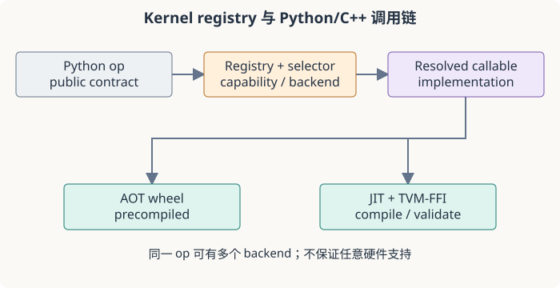
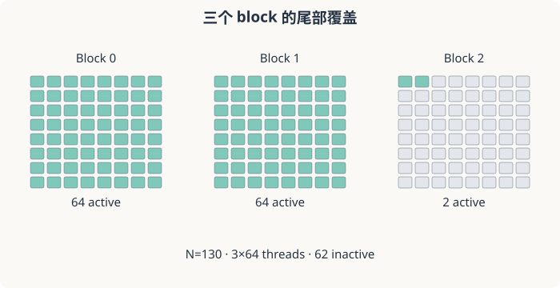

第 51 章 · SGLang 内核与存储
Unified Kernel Architecture：AOT、JIT、Registry 与 Backend Selection
一个算子怎样从 Python 调用进入适配的设备实现，并保证 shape、dtype、stride 与 stream 契约？
一个算子怎样从 Python 调用进入适配的设备实现，并保证 shape、dtype、stride 与 stream 契约？
1. 从调用到设备执行
AOT 将 C++/CUDA 提前编译到独立 sgl_kernel wheel；JIT 在运行时按实现与模板参数编译。当前快照将 AOT 源码放在 python/sglang/kernels/aot，JIT 基础设施在 kernels/jit，算子入口按 ops/<group> 分类。历史 sglang.jit_kernel 路径不再作为当前入口。
2. Registry 与选择器
KernelSpec 描述 op/backend、能力约束和实现入口；KernelRegistry 注册候选；selector.select_kernel 依据平台和指定 backend 选择，get_kernel 缓存解析后的 callable。runtime 负责 workspace、process group 和请求状态，kernel 接受所需参数。不要把所有算子视为同一个 CUDA extension。

3. FFI 边界与 TensorMatcher
JIT load_jit 产生模块，TVM-FFI TensorView 连接 Python tensor 与 C++ wrapper。TensorMatcher 检查 shape、stride、dtype、device，并用 symbolic size 保证多个 tensor 一致；LaunchKernel 使用当前 PyTorch stream。错误的 stride 或 device 应拒绝，而不是盲目解释地址。
4. 线程索引与尾部 guard
教学 add_constant：N=130，blockDim=64，grid=ceil(N/64)=3，192 threads 中只有130有效。index=blockIdx.x×blockDim.x+threadIdx.x，index≥N 时不读写。N=0 需单独处理，不能直接提交零 blocks。实际 vectorized kernel 还须处理对齐与尾部。
5. 内存带宽与融合
教学 FP16 elementwise add 读取 N 个元素、写回 N 个元素，最低 payload 为4N bytes；单纯加法约 N FLOPs，算术强度0.25 FLOP/byte。两个 elementwise 操作融合可能省掉中间读写，但增加 registers、降低 occupancy；必须检查数值和实际访存，不能从 launch 数量断言性能。

6. JIT 缓存与 CUDA Graph
编译时间与 steady-state kernel 时间分开。JIT cache_once、架构能力与模板 specialization 影响首次调用；capture 前准备适用 kernel 与 workspace，避免 graph 内动态编译/分配。kernel launch 异步不代表已经执行完成；正确 stream/event 依赖不能省略。
7. 工程验证
按固定开发指南实现 add_constant 后测试零长度、非整除尺寸、非连续、不同 dtype/device 和错误参数；以 PyTorch reference 比较，明确精度/容差、CUDA event timing、warmup、显存流量和 p50/p95。CPU lab 仅验证网格覆盖与边界，不编译 CUDA。
8. 交互：逐步检查机制
Kernel Architecture 教学实验
64 elements：1 block，64 active threads。
130 elements：3 blocks，130 active、62 inactive，尾部 guard 防越界。
0 elements：不提交 kernel；直接返回空结果。
教学模型仅验证机制与反例，不代表实测性能。
9. CPU 最小实验
kernel_contract.py 使用 Python 标准库，可独立执行。
python3 examples/kernel_contract.py不执行实际 GPU、网络、云存储或集群操作。
10. 源码阅读路线与证据
固定上游快照 0fde0356cc44bca9a7727a3a2e2c2d10cd5bd30f，区分实现、推导与教学示例。
- Layout / RFC #29630：Unified kernel namespace reorganizes operators, AOT and JIT; legacy sglang.jit_kernel removed.
- KernelRegistry / register_kernel：Registry records specifications by operation.
- select_kernel / get_kernel：Selector resolves implementation for an operation and platform.
- Tensor Checking / Kernel Launching：JIT uses TVM-FFI TensorView, TensorMatcher, LaunchKernel and runtime compilation.